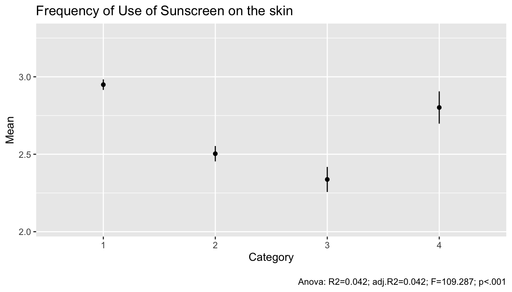
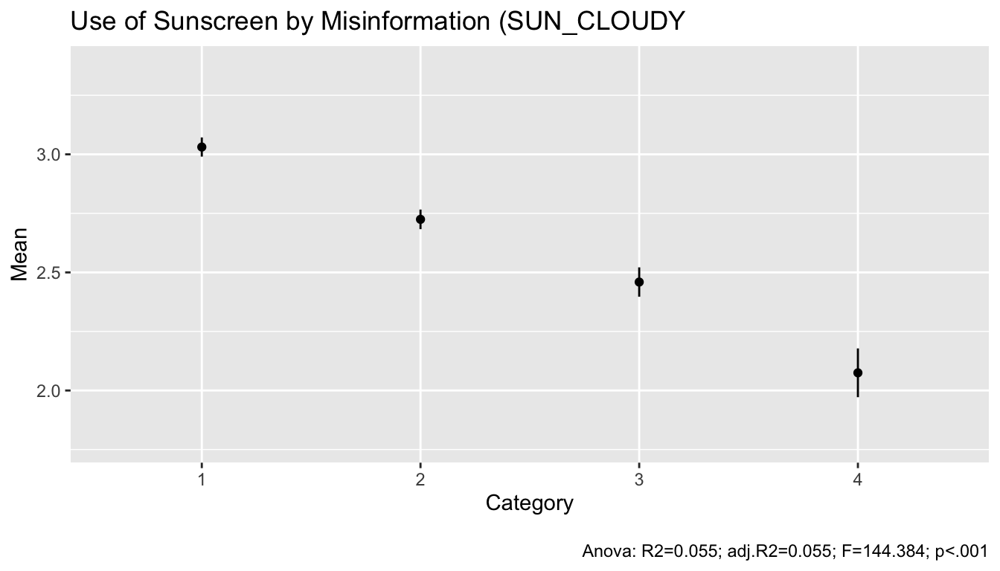
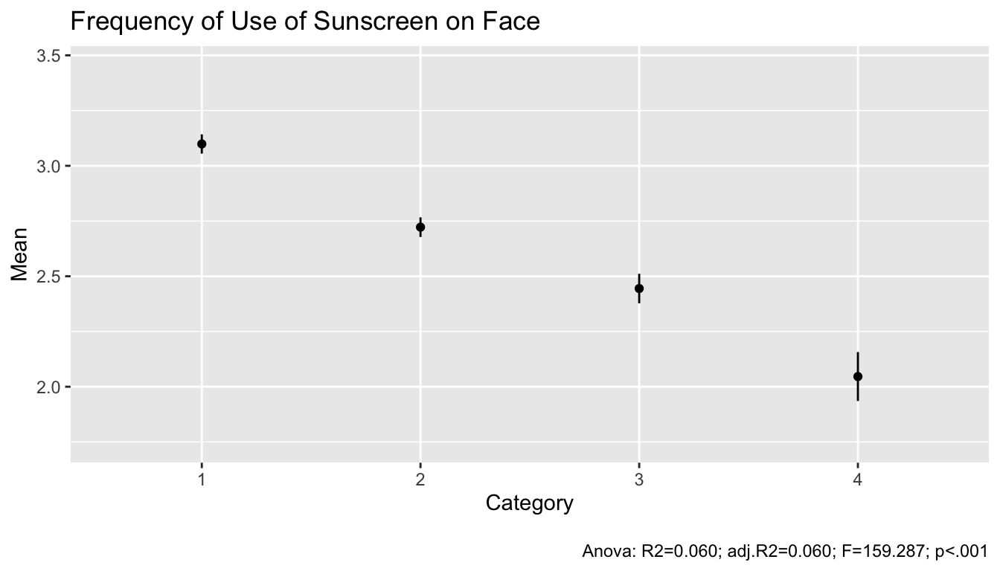
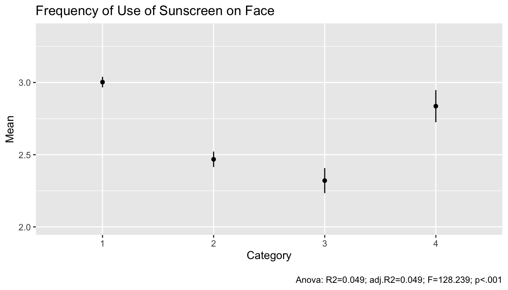
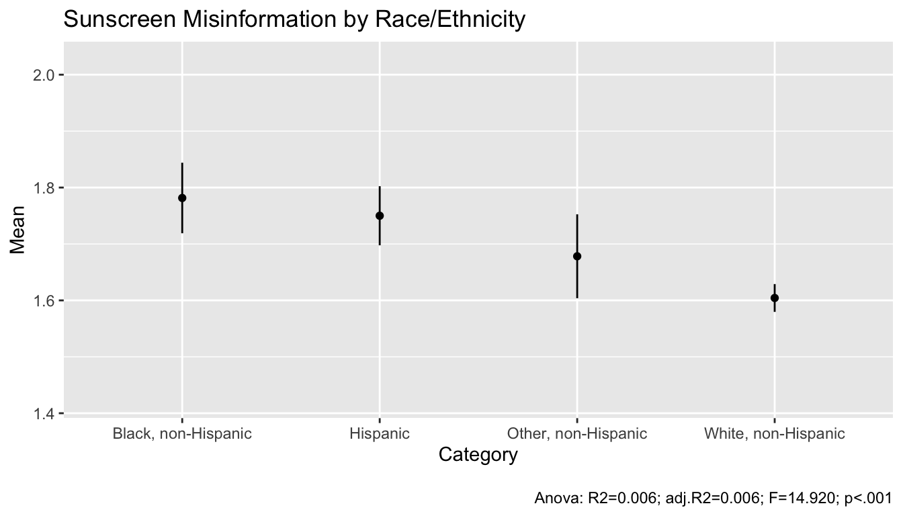
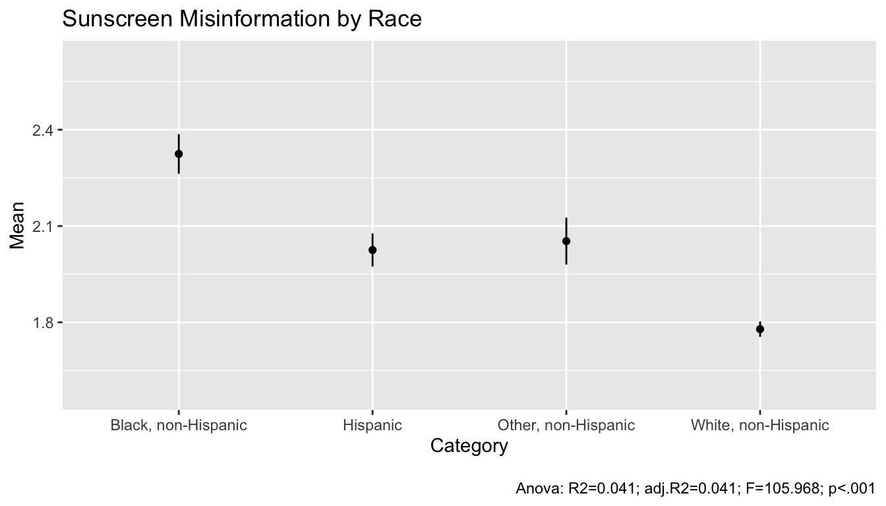

Knowledge of sunburn risks and use of sunscreen
Elin Waring1
1 Dept. of Sociology, Lehman College

Introduction
Skin cancer is the most common cancer in the United States. According to the Centers for Disease Control “Most skin cancers are caused by too much exposure to ultraviolet (UV) light. Protection from UV rays is important all year.” (CDC) More than 1 in every 5 Americans experience at least one diagnosis of skin cancer by the age of 70. There are major differences in the rates and types of skin cancer and location of the cancer across racial and ethnic groups. Hispanic and Black Americans are more likely to be diagnosed at late stages of skin cancer than white Americans (Skin Cancer Foundation).
There are known effective ways to lower the risk of skin cancer, but these often require individuals to take various steps to avoid exposure of their skin to to UV rays. These include covering the skin, correct use of effective sunscreens and not using tanning beds.
Although people of all races get skin cancer, reseearchers have found that medical text books and educational materials for the public often focus exclusively on “fair” (i.e. white) skin (Rodini and Kowalsky 2021). This may lead both doctors and patients to ignore the risk of UV rays to to those with darker skin.
There is also some research which indicates that some people believe that people with dark skin cannot get sun burned or in some cases can’t get skin cancer. While melanin does provide protection, it does not provide total protection. In particular, soles of the feet and nail beds have higher risk than the rest of the body.
Objectives
To determine the relationship of knowledge of the dangers of sun exposure to racial and ethnic identity.
To assess the extent to which knowledge of the dangers of sun exposure relate to changes in the use of sunscreen.
Methods
The RSS surveys are topical surveys administered to US adults. The first round of RSS included a set of questions about sun bur risks and sun screen use.
Hypothesis 1: People who have more incorrect information about sun burn will use sunscreen less often than those with correct information.
Rationale: Using sunscreen requires taking an action and also expenses. If someone does not think sun burn is a problem, they won’t make the effort or spend the money.
Hypothesis 2: People racialized as white will be less likely to agree with misinformation than those racialized as Black or Hispanic.
Rationale: Racialized information on skin cancer, emphasizing the risks of fair skin, leads both the general population and doctors to minimize the risks among people with darker skin. Therefore we expect that groups that on average have darker skin will tend to have less accurate information on the risks of sunburn.
Results
The RSS data on knowledge of the potential for sun to damage the skin and cause other harms. The dependent variables are how often you use sunscreen on either your face or other areas of your skin.




Hypothesis 1 is generally supported. For example, those who agreed more that there is no risk from the sun on cloudy days uses sun screen on their face or skin less often and the result was statistically significant at the .001 level.
However the results for disagreeing that “sunburn is not harmful in long run” are less clear. Those who “strongly agree” with the misinformation have similar sun screen use to those who “strongly disagree.” The unexpectedly high sun screen use for this group should be invetigated further.


Regression
Regression analysis indicates that these variables remain important predictors even when combined into a single model. That is, each one has its own separate effect.
|
When outdoors, how often use sunscreen on other exposed skin |
|||
|---|---|---|---|
| Predictors | Estimates | CI | p |
| (Intercept) | 3.29 | 3.21 – 3.36 | <0.001 |
| to_numeric(SUN_CLOUDY) | -0.23 | -0.26 – -0.19 | <0.001 |
| to_numeric(SUN_NOHARM) | -0.10 | -0.13 – -0.07 | <0.001 |
|
Panel Profile: Race and ethnicity - 4 levels: Black, non-Hispanic |
-0.54 | -0.62 – -0.45 | <0.001 |
|
Panel Profile: Race and ethnicity - 4 levels: Other, non-Hispanic |
-0.01 | -0.11 – 0.08 | 0.784 |
|
Panel Profile: Race and ethnicity - 4 levels: Hispanic |
-0.07 | -0.14 – 0.01 | 0.078 |
|
Panel Profile: Respondent gender: Female |
0.26 | 0.20 – 0.31 | <0.001 |
| Observations | 7368 | ||
| R2 / R2 adjusted | 0.090 / 0.090 | ||
Next Steps
The next steps for this research will be to incorporate other variables, such as age, level of education, language and whether a person has a doctor. Research using other data sets has found that people get most of their health information from lay sources (Ford and Kaphingst 2009), including community organizations, friends, family and the media. They found that this related to beliefs that the risks of cancer are modifiable. There are some items in the RSS that might allow examination of this.
The issue of the unexpected results for the “strongly agree” group requires further investigation.
Conclusion
Overall, these findings support sociological research that has identified ways in which medical information is almost always shown in reference to white bodies. While the need for education about the dangers of UV rays is clear, success at reducing skin cancer among African Americans, and to a lesser extent Hispanics, will require addressing the structural issues of a racialized health care system.
Supplemental materials